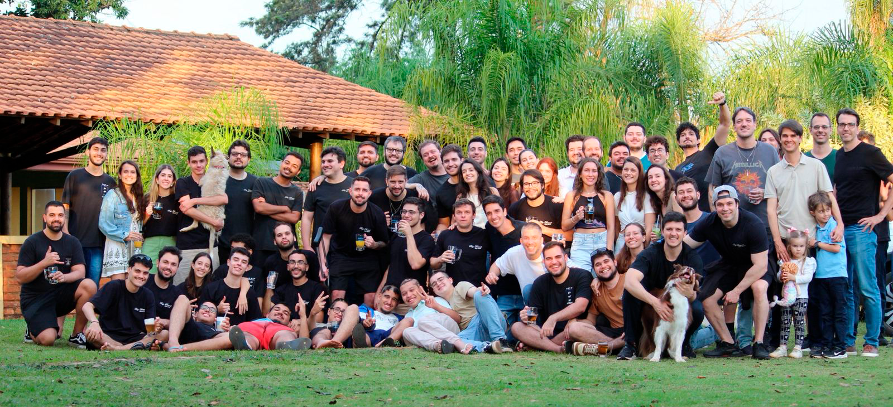
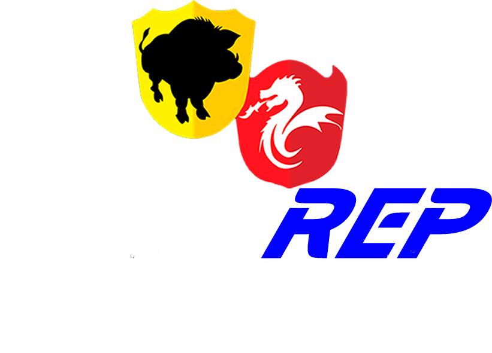
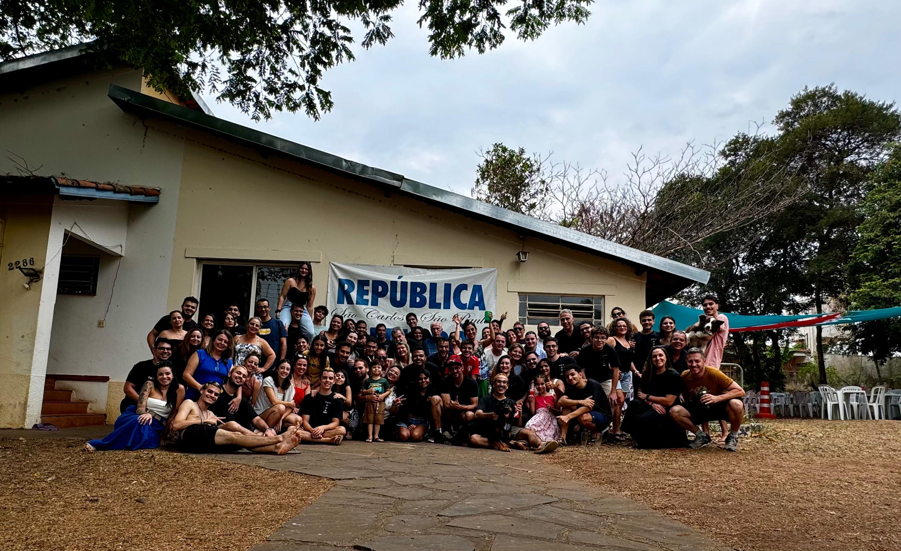
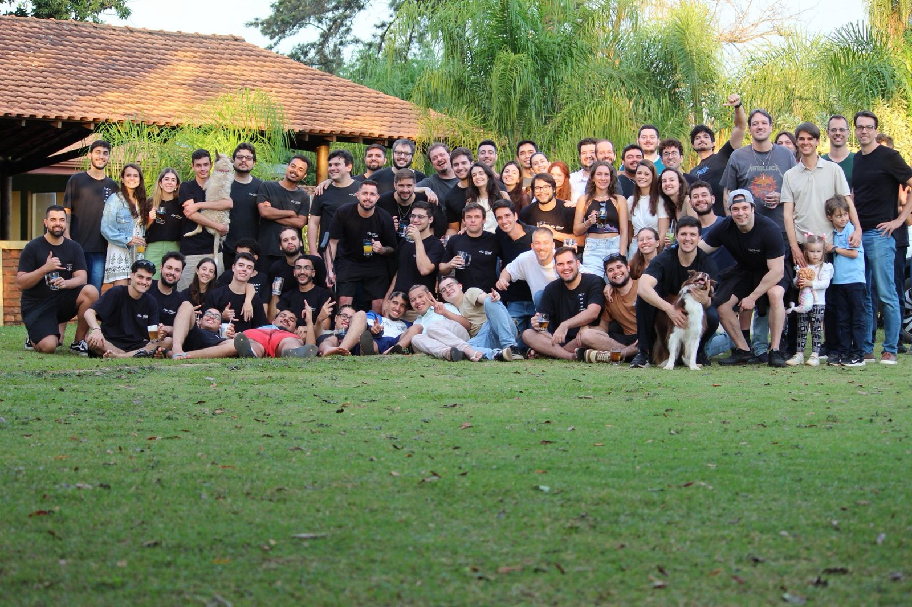

SÃO CARLOS - DESDE 2005
Sobre Nós
Fundada em 2005 por estudantes das Engenharias da USP, a República Demorô é uma das mais tradicionais repúblicas universitárias de São Carlos.
Hoje em dia, com moradores dos mais diversos cursos tanto da UFSCar quanto da USP, prezamos pela amizade e por partilhar os bons momentos da vida universitária entre nós!
Nossos Eventos
Organizado desde 2005, o Torneio InterREP se trata da maior competição entre Repúblicas de São Carlos. Organizada anualmente por nós, atualmente estamos na XIX Edição do Torneio, que conta com mais de 80 Repúblicas e 750 Atletas, o InterREP se divide em diversas áreas, como Marketing, Financeiro, Patrocínios, Operacional e Presidência.



Ao final do Torneio, sempre organizamos um evento de finalização do campeonato. O InterREP - A Festa se trata de um momento de comemoração, feito tanto para os ganhadores da competição, quanto feito para nós mesmos, com o objetivo de comemorarmos a finalização de um torneio trabalhoso para nós. Na última edição, contamos com a participação de 300 pessoas, com direito a entrega dos troféus para os campeões num clima perfeito de tardezinha, cerveja e piscina.



Churrasco dos Pais
Muito mais que uma República, a Demorô também é uma família. Por isso, todo ano organizamos nosso Churrasco de Pais aqui! Com a presença dos pais dos moradores, esse é um momento de extrema importância entre nós, estreitando os laços entre nossas famílias e nossa República!
Muito mais que uma República

Churrasco de Ex-Moradores
Anualmente, realizamos nosso tradicional Reencontro de Ex-Moradores. Aqui é onde percebemos a importância e a história da nossa República.
Compartilhando experiências, conhecendo melhor quem nós somos, nosso legado e como surgimos, nosso Reencontro é um momento extremamente especial e fundamental para nossa formação como Demorônios.
Regado à chopp, churrasco de alta qualidade e muita resenha, definitivamente é uma oportunidade única na vida de um universitário.
Uma família
QUEM MORA AQUI
Moradores
Nossa Casa